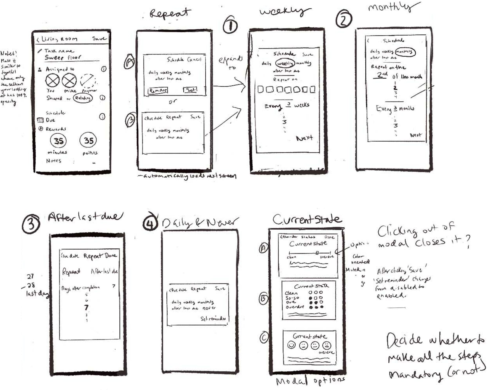
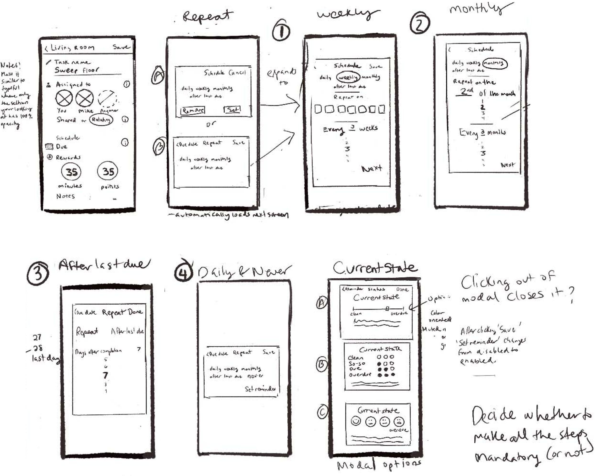

SOLUTION
A Collaborative, Communal Task Management App
HomeMakers is a collaborative app that makes managing communal tasks easy. With the app, housemates can see what others are doing to ensure that common areas are clean, know when it’s their turn to contribute to the house and avoid uncomfortable confrontations. Additional features include:
- Assigning tasks to specific housemates;
- Customizable task schedules;
- Notifications and reminders;
- History of tasks' completion over time